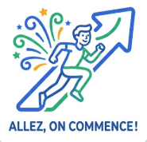

En esta primera sección encontraréis un Padlet con vocabulario y frases básicas que os ayudarán a dar vuestros primeros pasos en francés (Mes premiers pas en français). Os ayudará a aprender a presentaros, decir vuestro nombre, edad y hablar un poco sobre vosotros mismos.
Explorad el contenido, practicad las expresiones y utilizadlo como apoyo para vuestras primeras presentaciones.
Allez, on commence!

Para el docente: gestión del aula (Symbaloo)
Este symbaloo está pensado como un espacio de apoyo para el docente, con recursos y herramientas útiles para la gestión del aula. Encontraréis enlaces organizados que os ayudarán a planificar, dinamizar las clases y mejorar el clima de aprendizaje.
Explorad los bloques, seleccionad los recursos que mejor se adapten a vuestro contexto y utilizadlos como guía en vuestro día a día en el aula.